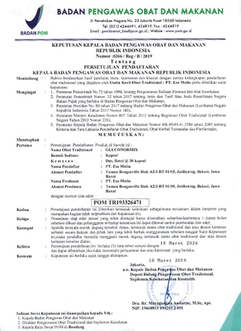
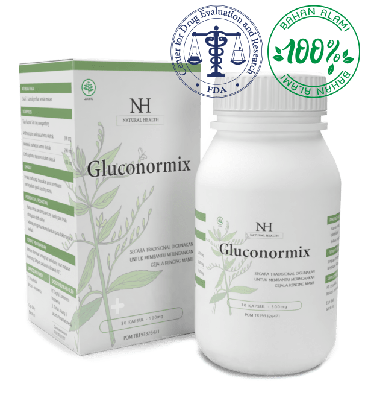
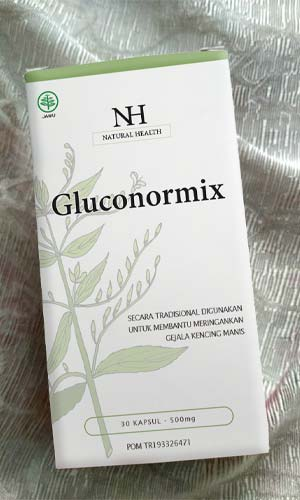
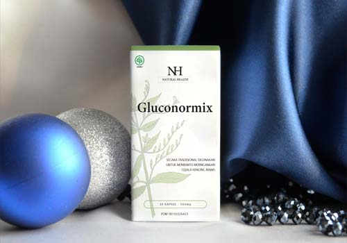

“Diabetes adalah penyakit mematikan yang membuat 2 juta orang meninggal setiap tahunnya! Bagaimana cara menyelamatkan diri Anda?" Ahli endokrin dan diabetes memiliki revolusi untuk menghilangkan diabetes
Editor: Statistik penyakit diabetes sangat mengejutkan. Sekitar 17% orang di Indonesia sakit, dan menurut WHO, 2 juta orang meninggal karena diabetes dan komplikasinya di dunia setiap tahun. Kami akan berbicara dengan ahli endokrin dan diabetes di ilmu kedokteran Yadi Hardian tentang apa yang harus dilakukan para penderita diabetes di Indonesia.
Baca selengkapnya…
Yadi Hardian
Ahli Endokrinologi dan Diabetes dari Indonesia, Ketua Institut Diabetologi
35 tahun pengalaman kerja.
Halo Doktor Yadi. Pertanyaan pertama, apakah statistik dari WHO benar?
Menurut data resmi, 17% populasi dari setiap negara sebenarnya didiagnosa mengidap penyakit diabetes. Semakin banyak orang yang beralih ke ahli jantung dan ahli endokrin karena masalah ini.
Seseorang yang menderita diabetes tidak dapat disepelekan. Selama belum ada analisis yang jelas, apakah kita masih memiliki risiko?
Sayangnya, saya harus mengatakan karena data ini benar. Mereka mungkin sedikit keliru dalam statistik. Tetapi sekitar 2 juta orang di seluruh dunia meninggal setiap tahunnya. Di Indonesia, menurut perkiraan kasar, 65 hingga 98 ribu orang meninggal karena diabetes setiap tahun. Dengan tidak adanya dukungan kesehatan tubuh yang memenuhi syarat, diabetes dapat menyebabkan berbagai jenis komplikasi yang secara bertahap menghancurkan tubuh manusia. Ini mungkin adalah masalah dengan organ individu, atau beberapa kerusakan spesifik yang terkait dengan diabetes. Misalnya, gangren diabetik, nefropati, retinopati, tukak trofik, hipoglikemia, ketoasidosis. Diabetes juga dapat menyebabkan perkembangan tumor dan kanker. Dengan satu atau lain cara, hasil yang sama dalam semua kasus penderita diabetes akan meninggal saat melawan penyakit yang menyakitkan, atau akan menjadi orang cacat yang butuh dukungan oleh bantuan klinis. Ini adalah ujung dari lebih 90.000 penderita diabetes di Indonesia setiap tahunnya. Jelas bahwa ini tidak tergantung pada usia atau faktor lain. Semuanya mungkin terjadi pada pasien berusia 24 tahun atau 45 tahun. Tidak mungkin untuk memprediksi siapa dan bagaimana ini akan terjadi. Anda dapat mengatakan dengan pasti bahwa cepat atau lambat diabetes akan diderita semua orang.
Apakah akan terjadi sesuatu karena hal ini?
Tentu saja banyak yang bisa terjadi, mulai dari kelelahan sampai penyakit serius seperti kanker. Sekarang tidak selalu mungkin untuk menemukan ahli endokrin di klinik, apalagi menemukan ahli endokrin atau ahli diabetes yang benar-benar berkualitas yang dapat memberikan Anda bantuan berkualitas. Dalam kebanyakan kasus, dokter bahkan tidak mencoba melakukan analisis terperinci, mereka hanya meresepkan insulin untuk pasien. Hasilnya adalah orang yang menderita penyakit itu dibiarkan sendirian dan pada akhirnya akan menemui ajalnya.
Tentu saja, Pusat Penelitian Endokrinologi (Institut Diabetologi) dan saya secara pribadi berusaha melakukan sesuatu untuk memperbaiki situasi dan memperbaiki kondisi penderita diabetes. Namun, kita harus memahami bahwa kita adalah lembaga independen dan tidak mengoperasikan klinik di wilayah negara ini. Namun baru-baru ini, kami berhasil menciptakan terobosan untuk proyek “Stop Diabetes” yang saya percaya akan mengubah situasi penderita diabetes di semua negara menjadi lebih baik.
Apa sebenarnya terobosan itu?
Kami secara resmi menciptakan produk pertama yang dibuat untuk proyek ini, yaitu Gluconormix.
Jika kita berbicara tentang efek produk ini, komposisi unik dari bahan alami yang memastikan seluruh kompleks zat aktifnya masuk ke dalam darah. Karena komposisi alaminya, Gluconormix merangsang sintesis insulin dalam sel pankreas. Akibatnya, tubuh mulai memproduksi insulin sendiri. Pada 93% orang, insulin tetap diproduksi dalam tubuh walaupun sebulan setelah minum Gluconormix.
Gluconormix dapat membantu penderita diabetes kembali ke keadaan sehat, membuat penyakit ini tidak kembali lagi. Jika kita berbicara tentang gejala spesifik diabetes, produk ini menghilangkan semua gejalanya dalam 30 hari penggunaan.
Berikut bahan-bahan utama dari Gluconormix dan khasiatnya
- Ekstrak Andrographis Paniculata Herba 200mg
Membantu melancarkan peredaran darah, dan membersihkan tubuh - Ekstrak Swietenia Mahagoni Semen 200mg
Mengurangi gejala diabetes - Ekstrak Orthosiphonis Stamineus Folium 100mg
Mengembalikan energi, dan meningkatkan metabolisme tubuh
Gluconormix saat ini adalah satu-satunya suplemen yang dapat membantu penderita diabetes. Semua perkembangan lain belum ada yang efektif.
Selain Indonesia, Gluconormix sudah lulus uji klinis di Swiss dan Jerman yang juga mengkonfirmasi keefektifannya. Sekarang ada permintaan besar untuk produk ini. Namun, menurut peraturan khusus dari produsen, produk ini hanya akan dijual di Indonesia dengan jumlah produksi yang sedikit. Setelah uji klinis, produk ini menerima sertifikat:
 Klik untuk memperbesar gambar
{kind=link}
Apakah suplemen ini sudah tersedia?
Ya, tentu saja ini sudah tersedia untuk semua orang, meskipun permintaannya sangat besar dan produksinya masih kecil. Produsen telah memastikan program khusus untuk suplemen ini Di Indonesia, penderita diabetes dapat membelinya dengan setengah harga.
Jerman memainkan peran utama dalam proyek Stop Diabetes. Karenanya Gluconormix juga diproduksi di Hamburg, Jerman. Saya harus mengatakan bahwa Jerman baru-baru ini membuat kemajuan besar di bidang teknologi medis berkat investasi keuangan yang sangat besar.
Di mana kita bisa membelinya?
Karena kami tidak memiliki jumlah Gluconormix yang besar di Indonesia, dengan membeli di situs resmi proyek yang saat ini tersedia. Kami telah mencoba bernegosiasi dengan rantai farmasi, tetapi semua orang menolak untuk menjual suplemen dengan harga yang kami sarankan (apotek ingin menghasilkan uang sebanyak mungkin, tetapi kami menawarkannya untuk dijual dengan harga produksi). Oleh karena itu, diputuskan untuk mengatur penjualan online untuk memberikan kesempatan sebanyak mungkin kepada orang untuk membeli produk ini.
Saat ini, siapa pun dapat memesan Gluconormix dengan mengisi formulir pemesanan di bawah ini untuk memesan langsung dari website produsen dan membelinya untuk penggunaan pribadi. Pengiriman dilakukan melalui kurir (dengan pembayaran setelah menerima barang).
Doktor Yadi Hardian, terima kasih atas wawancaranya. Mungkin Anda ingin mengatakan sesuatu kepada pembaca kami sebelum kami menyudahi wawancara ini?
Saya ingin mengatakan jangan abaikan penyakit Anda. Diabetes dapat menjadi fatal di tubuh Anda mulai dari kanker hingga kematian. Ini seperti hidup dan mengetahui bahwa Anda dapat meninggal kapan saja. Menurut statistik kami, penderita diabetes hidup rata-rata 23 tahun lebih pendek daripada orang sehat. Gluconormix memungkinkan Anda untuk menghilangkan penyakit dan mengembalikan 23 tahun itu kepada Anda.
Jika Anda tidak dapat menemukan ahli endokrin / ahli diabetes yang berkualitas di daerah Anda, Anda tidak memiliki uang untuk perawatan yang mahal, atau Anda hanya ingin melupakan gejala diabetes seperti mimpi buruk, gunakan Gluconormix.
Kami menyarankan Anda memesan DI SITUS RESMI PRODUSEN dengan harga promosi diskon 50% dengan mengisi formulir di bawah ini. ini adalah jaminan bahwa Anda tidak akan membeli barang palsu.
Survei pelanggan
Pelanggan yang terhormat! Kami ingin meminta Anda untuk melihat survei kami untuk memahami metode diabetes apa yang telah Anda gunakan dan yang dapat Anda sarankan kepada orang lain.
Apa yang telah Anda gunakan dan seberapa baik efeknya untuk diabetes Anda?
Voting anonim
3894 orang peserta

Saya sudah memesan kapsul ini dan dikirim dalam waktu kurang dari seminggu. Setelah 4 minggu saya merasa jauh lebih baik! Meski sebelumnya saya menderita diabetes selama 5 tahun. Terima kasih!

Salam hormat, Yadi Hardian.

Saya juga merekomendasikannya. Saya sudah mengidap diabetes selama 6 tahun! Anda bahkan tidak bisa membayangkan seberapa bahagianya saya sekarang karena bisa makan apa aja dan tidak perlu khawatir lagi :)
Salam hormat, Yadi Hardian.
Salam hormat, Yadi Hardian.
Salam hormat, Yadi Hardian.
Salam hormat, Yadi Hardian.

GLUCONORMIX
Menyingkirkan diabetes
dengan cepat selamanya!